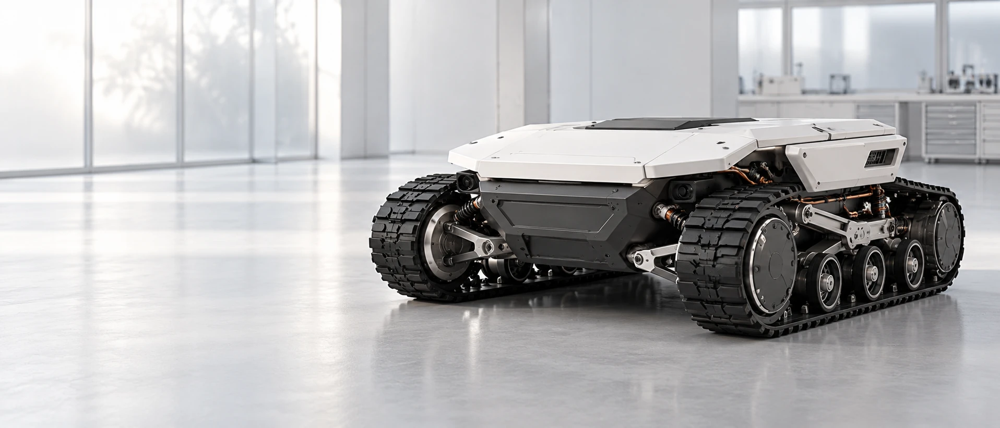

01 — PROGETTAZIONE
Architetture modulari.
Organizziamo il percorso tecnico intorno a moduli distinti: comandi, movimento, comunicazione con l’hardware e diagnostica. La modularità guida le scelte di sviluppo.
Piattaforme mobili, software e integrazione hardware. La nostra visione: trasformare le macchine in sistemi capaci di operare con crescente autonomia.
Esplora la nostra visione
MOBILE ROBOTICS / ENGINEERED FOR THE REAL WORLDLavoriamo a un percorso di sviluppo che unisce movimento, controllo e intelligenza del sistema. Partiamo dalla robotica terrestre per affrontare attività ripetitive e costruire le basi di nuove applicazioni autonome.
La manutenzione professionale del verde è il nostro primo ambito applicativo. La direzione è una base tecnologica modulare, capace di collegare controllo del movimento, percezione e pianificazione delle attività.
Focus tecnologico Robotica mobile terrestre
Approccio Sviluppo e prototipazione
Prima applicazione Manutenzione professionale
Organizziamo il percorso tecnico intorno a moduli distinti: comandi, movimento, comunicazione con l’hardware e diagnostica. La modularità guida le scelte di sviluppo.
Il controllo della piattaforma è il punto di incontro tra meccanica, elettronica e software. Misure e dati permettono di trasformare ogni prova in un avanzamento tecnico.
Simulazione, localizzazione e pianificazione definiscono la direzione della ricerca. L’obiettivo è portare le logiche autonome su una piattaforma fisica attraverso validazioni progressive.
Crediamo in una tecnologia comprensibile e modificabile. Architetture aperte e documentazione tecnica sono i principi con cui vogliamo favorire integrazione, manutenzione ed evoluzione.
La nostra visione va oltre la costruzione di nuove macchine: esplorare l’integrazione di capacità autonome su mezzi esistenti, valorizzando hardware e attrezzature già disponibili.
Una roadmap che collega sviluppo robotico, applicazioni professionali e integrazione su macchine esistenti.
La sperimentazione su rover terrestri è la base del nostro percorso. Lavoriamo verso piattaforme controllabili, misurabili e predisposte all’evoluzione del software.
La manutenzione di grandi aree verdi è il primo scenario di riferimento. L’obiettivo è collegare la ricerca tecnica alle esigenze di chi gestisce attività ripetitive in ambienti esterni.
Nel lungo periodo, puntiamo a estendere le capacità autonome a mezzi già esistenti. Un orizzonte che richiede software flessibile, interfacce dedicate e validazione delle singole integrazioni.
Cave Robotics Lab è impegnato in un percorso di ricerca e prototipazione. La manutenzione autonoma del verde è il primo obiettivo applicativo; le funzionalità autonome e il taglio non sono ancora disponibili come prodotto commerciale.
Ci interessano confronti tecnici su meccanica, elettronica e software, e il dialogo con chi si occupa di manutenzione del verde. Scriveteci indicando la vostra esperienza o il contesto operativo da approfondire.
Cerchiamo il confronto con competenze tecniche e realtà professionali interessate alla robotica applicata. Meccanica, elettronica, software e contesti operativi: è dall’integrazione che nascono nuove possibilità.
Avvia un confronto info@caveroboticslab.it